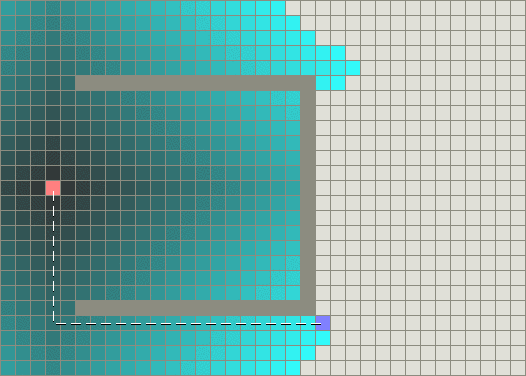

Paul L. Bailey, Ph.D.
Course Material 0513
Quote of the day
"Computer Science is no more about computers than astronomy is about telescopes."
Edsger Wybe Dijkstra, Computer Scientist

AP Computer Science
AP Computer Science Lesson 0513
AP Computer Science Mock Exam 2 Question 1
AP Computer Science Mock Exam 2 Question 2
AP Computer Science Mock Exam 1 Solutions (.zip)
AP Computer Science Checkin 0513